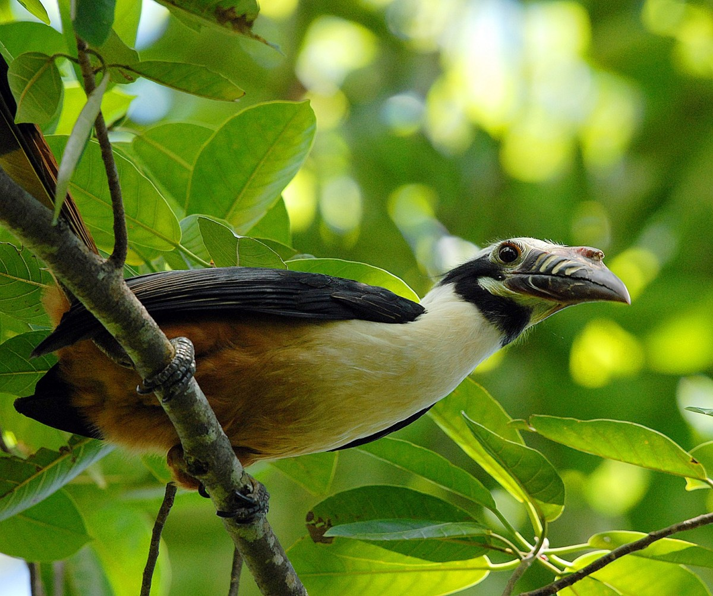

Faces of the forest.
Explore some of the extraordinary animals that need our protection.

VISAYAS · PHILIPPINESVisayan Hornbill
Penelopides panini
Habitat
Threats
Why they matter
Nature needs
our voices.
The Visayas is home to wildlife found nowhere else on Earth. Yet habitat destruction, hunting, and other human pressures threaten their survival.
WildVisayas exists to inspire awareness, appreciation, and responsible action for endangered species. Because protecting nature begins with understanding it.
Can we save their future?
Simulate how forest conservation and environmental threats may influence wildlife populations.
Population Simulator
Ready to explore?
Select a species and adjust the environmental conditions to see its projected population.
Small actions.
Lasting impact.
Share what you learn, respect wildlife habitats, support conservation organizations, and inspire others to care.
Explore Wildlife ↗